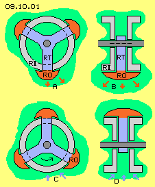
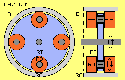
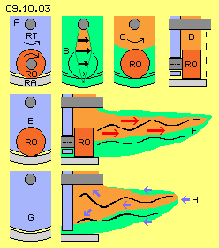
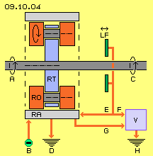

Railgun-Effect
At previous chapter were discussed the effects which occur at applications of railguns. This chapter now refers to these analyses several times. Besides others, railgun-machines are told to produce acceleration if projectiles are only gliding upon current-bearing rails (and are not rolling). This should be easy to rebuild also at a rotation system. At picture 09.10.01 a corresponding design schematic is sketched, left-upside by cross-sectional and right-upside by longitudinal view.

At a shaft (dark-grey) a rotor-arm (RT, blue) is installed, here e.g. in shape of three radial spokes. At each end of a spoke a rotor (RO, dark-red) is mounted, which is gliding along the outside face of an inside-ring (RI, light-grey). The whole system is electric charged, so at all surfaces exists electro-static charge, here marked by the light-green area. Each rotor reaches out upon the inside-ring in shape of a round hill and corresponding further outward reaches the charge. When the rotor is turning around the system axis, the charge is dammed-up in front of the rotor (here each left side of the rotor), as marked by the red arrows at A and B. The aether-movements are reaching even further outward.
At this picture below, the rotor did turn by 60 degree. The (generally stationary) aether of that place now can press-back the swinging motions nearer to the inside-ring, like marked by the blue arrows at C and D. All around that machine thus the aether comes into a pulsating swinging motion in radial direction. If a corresponding pulsating current would flow e.g. from the left to the right inside-ring, accelerated rotation could come up. By input of strong current naturally one can achieve mechanical movements. Here however it´s the aim to generate rotation by minimum input of energy, e.g. simply by electrostatic charges - and this conception might not really match that aim.
Ballbearing-System
Nevertheless this system achieves pulsating swinging charge with minimum energy-demands, because practically only the friction of bearings must be compensated. As mentioned at previous chapter, an additional ´swirl´ of aether-movements is necessary. Previous rigid ´rotors´ thus should perform an additional rotation. A corresponding conception schematic is sketched at picture 09.10.02, left side by cross-sectional and right side by longitudinal view. At the shaft (dark-grey) now a disk (RT, blue) is installed (instead of previous spokes). At this disk here e.g. four cylinders (RO, dark-red) are mounted turnable. These rotors are rolling at the inner face of a stationary outside-ring (RA, light-grey).
This construction in principle corresponds to a ballbearing and again energy-input is demanded only for compensation of friction at the bearings. However the ´balls´ here are not rolling between an outside- and an inside-ring. Instead of, the rotors (RO, dark-red) are guided by the disk (RT, blue). These bearings must allow the rotors to roll direct at the outside-ring (RA, light-grey), pressed onto that face by centrifugal forces.

Increased Swinging at the Centre
When that system is charged electrostatic, the charge ´sticks´ (see previous chapter) at the surface of rotors, which are turning around the system axis and around their own axis same time. So the aether-swinging of charges are swirling twice, thus increased movements come up and thus also a wider aether-volume is involved. At following picture 09.10.03 only a section below the shaft (dark-grey) is drawn several times. This ´window´ represents the view from outside, e.g. of an ´indifferent onlooker´ respective the surrounding ´stationary´ aether (see previous chapter). Upside left at A this window-section of previous picture is drawn once more.
The system is working finally after an electrostatic charging. That´s why all surfaces at B are marked light-green. The system is working finally after it´s started to turn around. Then, the different mechanical parts are moving by different speeds within space. Within the aether these motions are rebuild by stroke-components of different strength. From the stationary outside-ring further inward, the motions of the rotors become faster, thus also the stroke-components become stronger. At B that fact is marked by green cone and the black arrows, which are longer towards inside.
The most fast mechanic motion exists at the inner rim of the rotor (here the upside rim). Again some further inward, the strong strokes of aether are not hindered. Finally at the shaft, that whirlpool is decelerated. So within that central area exist ´oversize aether-strokes´. At B this fact is marked by the wide red cone and at C these strong motions are marked by the light-red area. At longitudinal view at D this area between rotor (dark-red) and shaft (dark-grey) is also marked light-red (details see previous chapter).
Increased Charge-Swinging
At second row of picture 09.10.03 left side at E, the rotor (RO, dark-red) is positioned below at this window. The rotor is loaded by charge, which reaches far out into space aside. At the longitudinal view at right side, that charge is marked by light-green area. The multiple twisted black connecting-line represents the swinging of this charge.

These motions are overlaid by the aether-strokes, which come up by the turning of the rotor. The further inside, the stronger the stroke-components are. They build an additional swirl within the aether. Correspondingly, the additional movements reach out aside even wider. This enlarged area is marked light-red and the intensive charge-swinging is represented by the stronger twisted black connecting line (details again see previous chapter). So whenever a rotor is rolling through that window-area, aside of comes up an extension of the aether-swinging, like marked by red arrows F.
Axial pulsating Movements
At row below at this picture 09.10.03 left side at G, the chronological following situation is drawn. The rotor did roll off to right side and the following gap now appears within that window-area. Into that ´swirl-free room´ now the general aether-pressure can push-back the previous twisted-up vortices, like marked by the blue arrows H at corresponding longitudinal view right side. The intensive swinging thus is shifted from right to left. The aether-pressure however can not stop the intensive motions, but the swinging movements are pressed more broad, like marked by the diagonal blue arrows. At the one hand, previous enforced charge-swinging is shifted inward to the shaft and the disk of rotor-arm. At the other hand, the previous increased intensity of motions is shifted outward into the gap between the rotors.
Into that window-area, at next moment, appears the next rotor with its charge at faces aside, and thus the previous process is repeated. So at this location the intensity of motions of the (generally stationary) aether is shifted outward aside and at next phase is shifted back into the following gap between the rotors. That pulsation is most aether-conform motion-pattern, especially with these multiple twisted and overlaying movements. The spiral connecting-lines of the charge-vortices are screwing around and same time are springy shifted to-and-fro in axial direction. Probably that pulsation comes up at its best, when the gaps between the rotors are likely to the diameter of rotors (opposite to ballbearings of previous chapter, where the balls were positioned near to the next).
Acceleration-Effect
At upside row of picture 09.10.03 at C and D was discussed, that and why ´oversized´ stroke-components exist at the central area between rotor and shaft. That whirlpool becomes decelerated in shape of a ´rigid vortex´ by the surface of shaft (dark-grey) and the inner part of the rotor-arm-disk (blue). Opposite: because the atoms of these material faces are moving relativr slow within space, they get pushed into turning sense of system by these faster aether-movements.
The pulsating aether-swinging movements in axial direction are shifting the ´overheated´ charge-movements some inward and thus enforce the motions within the gaps between the rotors and there also radial inward. So also a thrust in turning sense of system is affecting at these relative slow moving material faces. In addition, that back-pulsating (at the picture marked by blue arrows H) is shifting the increased charge-vortices some outward. The atoms of rotors are moving slow within space at this radius. So the strong stroke-components accelerate the rotation of these mechanical elements.
Thus first, a strong stroke-component wanders all around at the central area (at C and D). Second, a strong swirl of charge comes up aside of the rotors, especially at their inside rim. This results an extension of charge-swinging into areas aside (see red arrows F). Third, at just that aether-area the intensive movements pulsate back into the rooms between the rotors (see blue arrow H). Decisive now is, the oversize-swinging respective the enforced strokes are shifted into areas, where material surfaces are turning ´too slow´ (the side-faces of rotor-arm-disk and the outside parts of rotors).
This thrust accelerates the turning of the shaft and the rotor-arm, however also the rotors are pushed faster around the system axis. The rotors become faster rolling at the stationary outside-ring - again resulting stronger swirls of the charge vortices. This acceleration-effect can speed-up a system to self-destruction (like discussed at previous chapter). However that risk does not exist here, based on the ´aether-adequate´ swinging into axial direction. Each rotor is followed by a gap, so the swinging motions are pulsating aside-outward and back again. So no ´endless´ extension of oversize aether-movements comes up, but that swinging to-and-fro balances itself within that local area. That motion-pattern, which is pulsating in-itself, is completely balanced. Resulting is a mechanical acceleration, because the fast aether-movements respective the strong stroke-components are shifted into areas, where material constructional elements are turning relative slow.
Functional Model

At picture 09.10.04 schematic is drawn a functional model of that conception. At the system-shaft (dark-grey) is fix mounted the rotor-arm (RT, blue). At the border of this disk are turnable mounted cylinder-shaped rotors (RO, dark-red). The rotors are rolling at the inner face of the stationary outside-ring (RA, light-grey). This arrangement is stored within a housing, however no electric contact exists between these constructional elements and the housing (the housing is not drawn here). The red lines and arrows at this picture represent electric conductors. Depending on phase of operating mode, alternative currents are flowing at these conductors.
When starting the system, the shaft must be put turning (see arrow A). Only few energy-input will be demanded, because the mechanical elements can turn as free as a ballbearing. After starting the revolutions, whole system must be charged electrostatic, so negative charges exist at all surfaces (see minus-symbol at B). The system becomes accelerated by process discussed upside, so a mechanic turning momentum is available at the shaft (see arrow C). The system then is working autonomous as motor. The rotation of the system becomes decelerated and finally stopped, when the charge can flow off, e.g. if a switch allow the charge to flow into the ground via conductor D.
At the other hand the system works as a generator, because the originally fed charge becomes stronger by the additional swirls of the aether, resulting higher voltage. Like shown at previous chapters, the additional generated charge could be taken off by ´charge-catchers´ (LF, dark-green). Ring-shaped faces could be used, which might be shifted in axial direction, to ´suck-in´ more or less charge. As an alternative, rods could be used, which might be swerved more or less towards the centre. At any case, stronger charge-layers would be accumulated than once were fed at the outside-ring when starting the system.
Via conductor E, that additional charge could be re-loaded into the system. At the surfaces of the rotors thus aether-movements become even more intensive. The system is accelerated again, a stronger turning momentum is achieved, and in addition more charge respective higher voltage reaches to the charge-catchers. If no more back-charging via conductor E is necessary, the oversize-voltage could be guided to a consumer (V, blue) via conductor F and finally to the ground H.
Instead of these complex charge-catchers a simple solution might work as well. At the central area between the rotors and the shaft comes up ´oversize´ strokes of aether-movements. The charges at the side-faces of rotors become ´heated-up´ by the double overlaying revolutions. These intensive aether-vortices practically correspond to stronger charge. This is pressed towards material surfaces by the general aether-pressure all times. So the shaft and the disk of rotor-arm and the faces of the rotors will show stronger charges, which finally accumulates at the outside face of the outside-ring. Via conductor G that additional generated voltage can flow as an electric current to the consumer (V, blue) and finally into the ground H.
Constructional Variations
That system must be started mechanical and must be fed with electrostatic charge once at the beginning. Naturally it appears incredible, the system should go on working as a motor without further input of energy. However one must remind, all mechanic motions finally are motions within the aether. Within the gapless aether inevitably all movements must go on, especially within closed and ordered motion-pattern. The continuous rotation around the system axis produces a corresponding ´whirlpool´ (and finally this results the appearance of inertia or kinetic energy). The rotation of the rotors around their own axis produces an ordered overlay. Because the inner rim of rotors are turning much faster than the other mechanic parts, locally differing strokes of different strength come up. The sideward pulsation shifts the intensive motions into areas of relative slow turning. So the system becomes accelerated - however that thrust-energy does not get lost, because faster rotation again enforces all these aether-vortices.
Nevertheless it´s an open question, if this system is used as a motor at its best. If an external motor would be used for driving the system, only few energy-input is demanded, however the speed of revolutions can easy hold constant. So a constant amount of additional generated charge respective voltage is produced, which finally is available at the outside face of the outside-ring. So that variation represents a generator with good control of voltage respective strength of the current.
Previous picture 09.10.04 thus shows only the general conception and alternative ways for guiding the charges and currents. Depending on operation-mode, naturally additional electric elements are necessary, e.g. switches, rectifier, diodes, transistors, controllable resistors etc. for realizing working models. Probably also diverse modules could be installed at the shaft with rotors shifted. Opposite, a generator with vertical shaft and rotors installed only upside could show optimum performance, e.g. based on the general left-turning of electromagnetic appearances. This conception could also work with permanent magnets as rotors, just because the generally left-turning magnetic fieldlines, which here could be enforced by additional left-turning rotation and swirls. Nevertheless that solution with electrostatic charges should be preferred, just because it´s much easier to control (via additional charge or drawing-off of generated current). Naturally many further experiments must be done to find the best relations.
If ... then ...
If the reports about railguns and experiments with ballbearing systems of different kind are true (and I just must take this as starting point), then the appearing effects are not to explain by conventional understanding of electromagnetic processes. Then the decisive processes must occur within the real aether. Then my considerations of previous and of this chapter can not be totally false respective at any case these concrete aether-movements are much better appropriate to the facts than the Nothing and pure fictive fields of common sciences.
The Free Aether with its chaotic and light-fast motions represents an unlimited source of energy. It´s relative easy and possible by few efforts to impress the aether with an overlaying motion-pattern. Within the gapless aether all local swinging movements go on without losses. It´s absolutely possible to organize the aether-movements, so material particles are pushed forward or a given charge-layer becomes more intensive. Possibly previous considerations might animate some handcrafts to check these proposals by real models. Professional physicians and electric engineers won´t dare at the very moment to doubt the Nothing of common science - or even to think about using that ´Perpetuum Mobile´ of the continuous swinging aether by simple machines.
At first, naturally any ´normal brain´ doubts these claims. However remember, it needs only some rubbing a PVC-ruler to generate electrostatic charge, reaching far out into neighbouring space. This machine can be build with a diameter of only few centimetre and can drive 10000 rpm and beyond, by nearby null input of power. So the given charge is swirled up to high voltage. If current flows off, only the ´over-heated´ vortices are pushed along a wire towards the consumer. The same aether still remains within the system, still twisting in shape of the remaining charge. Especially if the current is allowed to flow off only by phases, each ´backstroke´ feeds up the system with vortices. So if … then … would be worth to be checked.